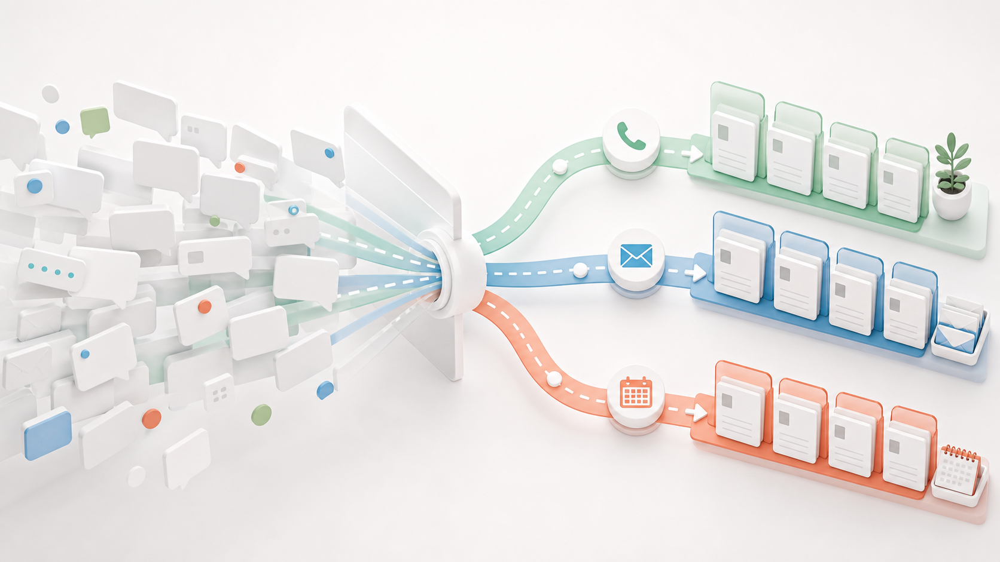

他社の改善事例 / EC・小売・食品製造
週明けの未読47件を、返せるものと責任者案件に分けておく
メール、フォーム、SNS、注文履歴をまとめて、すぐ返せる質問、確認が必要な注文、責任者に上げる苦情へ分けます。担当者は最初から判断が必要な対応に入れます。

先に結論
問い合わせ対応を重くしていたのは、返せる質問と慎重に見る案件が同じ未読に並ぶことでした。
問い合わせ対応がつらいのは、件数だけが理由ではありません。配送状況、領収書、返品相談、商品不良、法人見積が同じ受信箱に入り、担当者は一件ずつ開くまで重さを判断できませんでした。
改善後は、AIが問い合わせ本文、注文情報、過去対応を見て、返信できる順、確認待ち、要注意、責任者確認に分けます。担当者は未読を上から読むのではなく、謝罪、返金、交換、法人対応など、人が決める案件から確認できます。
仕事の変化
問い合わせを開く前に、見る順番と確認点をそろえます。
現場で起きていたこと
午前中だけでメール、フォーム、SNS、電話メモが積み上がり、注文画面と在庫表を何度も開き直していました。重い苦情に気づくころには、担当者の集中が切れていました。
変えたこと
AIで先に進めるのは、問い合わせの分類と優先度付け、注文・配送・在庫情報との照合、返信下書きの作成までです。人は謝罪や補償の判断、顧客感情に合わせた表現、返金・交換・特別対応の承認を見て、必要なところだけ直します。
改善後に残るもの
領収書や配送状況のような定型回答は先に返し、商品不良や返金相談は履歴と確認点をそろえてから落ち着いて見られます。
改善後の実感
問い合わせ対応が、未読を探す仕事から確認して送る仕事に変わります。
未読を一件ずつ開く
簡単な質問も重要な苦情も混ざり、担当者の集中が何度も切れていました。
返せる質問と確認案件に分かれる
AIがテンプレート返信、確認待ち、責任者確認を分け、下書きを添えます。
午前中の初動が軽くなる
返せる問い合わせを早く返し、重い案件に落ち着いて向き合えます。
現場の一場面
10時06分、担当者の受信箱には未読が47件ありました。
週明けの10時06分。担当者はメール、問い合わせフォーム、SNS通知、電話メモを順番に開いていました。配送状況、領収書、商品不良、返品相談、法人見積。画面上では、領収書の依頼も商品不良の連絡も同じ未読に見えます。
以前は、軽い質問に返している途中で重い苦情を見つけ、気持ちが引っ張られていました。確認のために注文画面を開き、在庫を見て、またメールへ戻る。その往復だけで昼前になり、まだ返せていない問い合わせが残ります。
改善後は、AIが問い合わせを読み、注文情報と照合し、返信できるもの、確認が必要なもの、責任者判断が必要なものに分けます。よくある質問には返信下書きも付いています。
担当者はまず商品不良、返金、強い不満のある連絡を確認し、その後で定型回答の下書きを直します。昼前に未返信の山が低くなると、午後の顧客対応に余裕が出ます。
改善のイメージ
画面と机の上に、問い合わせの種類と確認すべき案件が見えるようになります。

担当者が落ち着いて確認する
問い合わせを一人で抱え込まず、確認済みのカードを見ながら対応順を決めている場面です。

返せるものから返す
メール、チャット、返品、確認待ちが種類別に分かれ、定型回答から処理できる状態を表します。

要注意を埋もれさせない
散らばった連絡が経路別に分かれ、苦情や返金相談を他の問い合わせに埋もれさせないイメージです。
導入前
導入前は、問い合わせを読むたびに注文、在庫、配送状況を開き直していました。
メール、フォーム、SNS、電話メモが分かれ、全体像が見えにくくなっていました。
問い合わせ本文だけでは判断できず、注文、在庫、配送情報を何度も確認していました。
謝罪や責任者判断が必要な問い合わせが、簡単な質問の間に混ざっていました。
仕事の流れ
問い合わせ対応では、AIが材料を整え、人が最後に判断します。
AIが見てよい範囲を決め、顧客情報の扱いを制限します。
配送、返品、在庫、苦情、法人相談などに整理します。
店舗の言い回しに合わせた返信案と、送信前に人が見る確認点を出します。
謝罪の強さ、返金・交換の可否、個別事情への配慮、外部送信前の最終確認は人が行います。
人とAIの分担
任せる仕事と、任せてはいけない判断を分ける。
AIに渡しやすい作業
- 問い合わせの分類と優先度付け
- 注文・配送・在庫情報との照合
- 返信下書きの作成
- 責任者確認が必要な案件の抽出
人が見るべき判断
- 謝罪や補償の判断
- 顧客感情に合わせた表現
- 返金・交換・特別対応の承認
- 外部送信前の最終確認